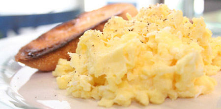
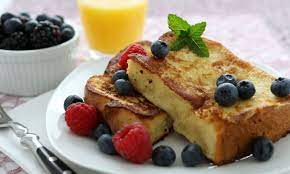
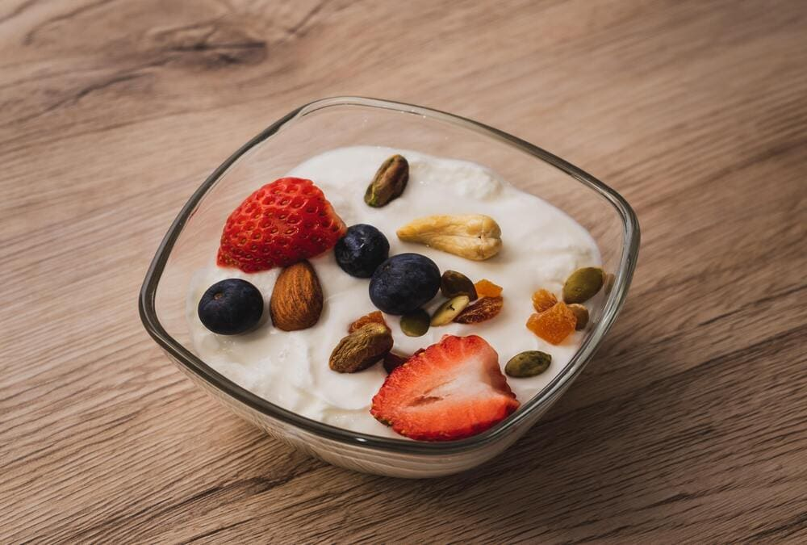

RECETAS GRUPO 2
HUEVOS REVUELTOS
Fueron creados en 1667 involuntariamente por Francisco Lorín Colorado, un cocinero que estaba haciendo huevos
fritos, pero que padecía una forma avanzada de temblor esencial. Al intentar darles la vuelta se le rompieron y
"revolvieron".
Ingredientes
- 5 huevos
- 1 cucharada de aceite de oliva
- Sal
- Pimienta
Prodecimiento
- Poner la sartén a fuego medio.
- Echar los huevos a la sartén caliente y removemos constantemente y de forma envolvente con una cuchara de
madera.
- atravesar los huevos desde los bordes hacia el centro, dandoles tiempo a que vayan cuajando.
- Apagar el fuego y veremos el huevo que se sigue cocinado porque la sartén está aún caliente, retirar a un
plato. Salpimentar

🔝
Autor: Agus
TOSTADAS FRANCESAS
Eran un plato típico de campesinos y gente sin recursos. Hasta este día en Francia el plato se conoce como “pain
perdu”, que se puede traducir como el pan perdido
Ingredientes
- 4 rebanadas de pan de molde
- 2 huevos
- 200ml de leche
- 4 cucharadas de azucar
- Canela
- Mantequilla para la sárten
Prodecimiento
- Mezclamor los huevos bien batidos con la leche, el azúcar, la canela y un poco de esencia de vainilla.
- Verter la mezcla anterior en una bandeja profunda, donde colocaremos las rebanadas de pan para que se empapen
bien
- Poner al fuego una plancha, una sartén grande y derretir un trocito de manteca sobre la misma
- Dorar a fuego lento las tostadas francesas por ambos lados, añadiendo un poco más de mantequilla cada vez que
pongamos en la plancha una nueva rebanada.

🔝
Autor: Agus
YOGUR CON FRUTAS
La primera producción industrializada de yogur se atribuye a Isaac Carasso en 1919 en Barcelona. También
introdujo el yogur en los Estados Unidos y una gama de yogures con sabores de fruta en la siguiente década.
Ingredientes
- 1 vaso de yogur natural o yogur griego
- 15 ml de miel
- 1 cucharada postre de Ralladura de piel de limón
Preparación
- Bueno la preparación es realmente sencilla, coge las frutas y quitales la piel, corta en cubitos o rodajas
como tu las prefieras.
- A continuación en un tazo vierte el yogur de tu elección y añade las frutas, para terminar de complementar
nuestro rico y nutritivo desayuno saludable, añade un la miel y ralladura de limón.
- Listo asi de simple, ya esta terminado y podemos comenzar a degustar nuestro desayuno

🔝
Autor: David
SANDWICH
El sandwich o emparedado es una comida a modo de tentempié, aperitivo o la comida que se suele hacer a
diario,típica de la gastronomía inglesa. Suele consistir en dos rebanadas de pan de molde inglés, o de cualquier
tipo de pan, entre las cuales se coloca otros alimentos tales como carne, queso, verduras otros, a veces con
condimentos, salsas u otros acompañantes.
Ingredientes
- 2 rebanadas de pan de molde
- 1 loncha de jamon
- 1 rebanada de queso
- 1 tomate
- 1 lechuga
Prodecimiento
- Ponemos el queso y el jamon encima del pan
- Cortamos el tomate en rebanada y ponemos encima de los ingredientes
- Hacemos lo mismo que con el tomate cortando finamente la lechuga
 🔝
🔝
Autor: David
cambio4
CAFÉ CON LECHE
Es una mezcla de espuma de leche y el líquido de la leche vaporizada. El café con leche es un clásico entre los
consumidores de café que prefieren un sabor de expreso más fuerte.
Ingredientes
- 10 cucharaditas de café soluble
- 4 tazas de agua
- 4 tazas de leche de vaca
- azúcar, al gusto
Utensilios
- 2 ollas medianas
Prodecimiento
- Calentar el agua y la leche en ollas separadas.
- Servir en las tazas 3/4 de agua y 2 cucharaditas de café.
- Servir la 1/4 de leche y azúcar al gusto.
 🔝
🔝
Autor: Guille
Zumo de naranja
El zumo (o jugo) de naranja es un zumo de frutas en forma de líquido obtenido de exprimir el interior de las
naranjas.
Prodecimiento
- Corta las naranjas por la mitad, y exprímelas en el exprimidor.
- Una vez hayas hecho el zumo utiliza un colador con el fin de separar las posibles pepitas o semillitas que
hayan pasado al zumo.
- Mezcla hasta a su total disolución.
🔝
Autor: Guille